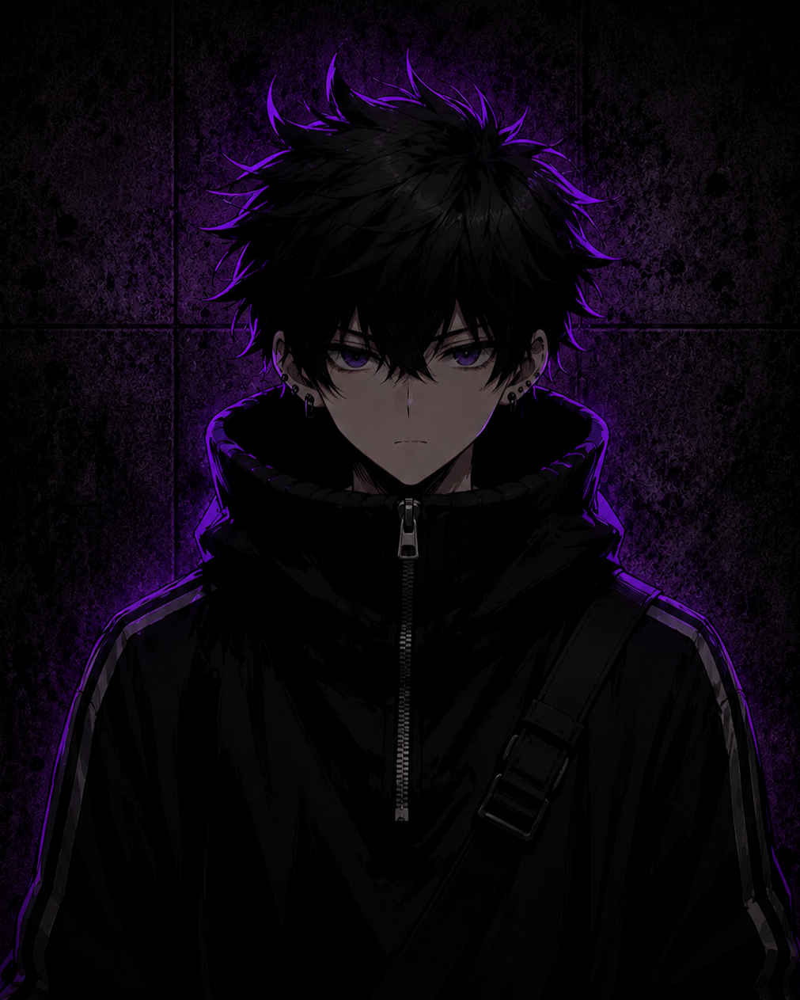
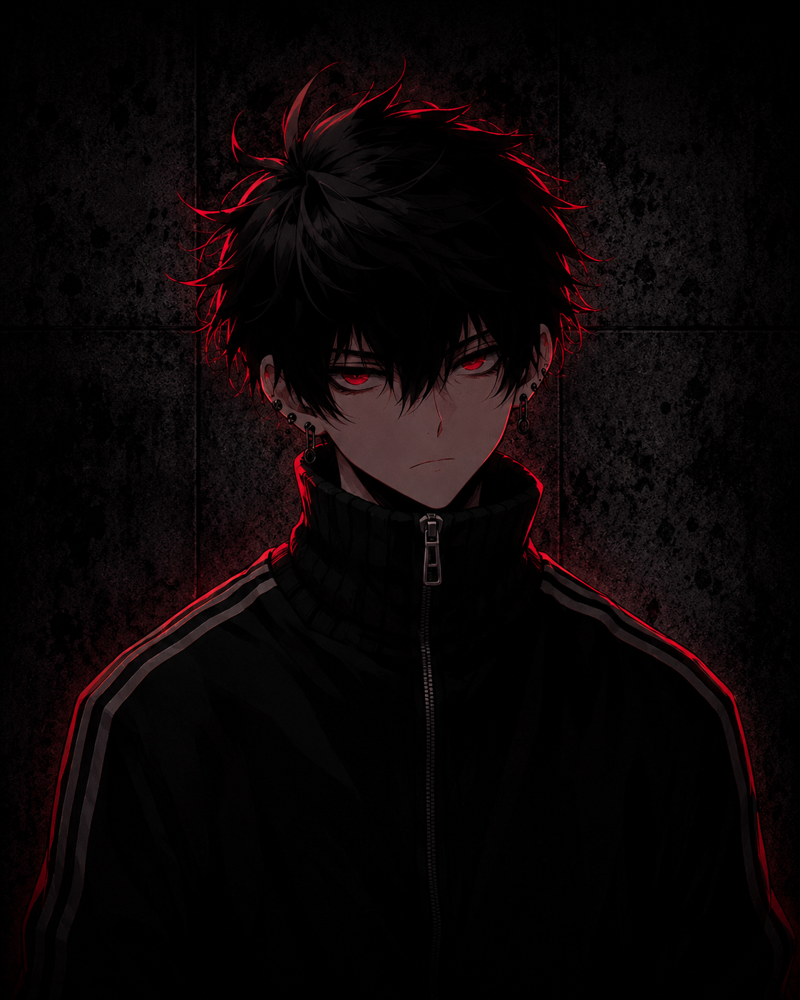

02 · FIELD OPERATIVES
PERSONAGENS

AGENTE-01 ↗// PERCEPÇÃO AMPLIADA
Philip Stills
Protagonista · Combate de alta intensidade

AGENTE-02 ↗// CINÉTICA DE CALOR
Aidem Stewart
Infiltrador · Furtividade e eliminação
 AGENTE-03
↗
AGENTE-03
↗
// INTERFACE NEURAL
Anny Pewter
Estrategista · Tecnologia e análise tática
 AGENTE-04
↗
AGENTE-04
↗
// MANIPULAÇÃO DE DADOS
Scott Smith
Defensor · Resistência e força bruta